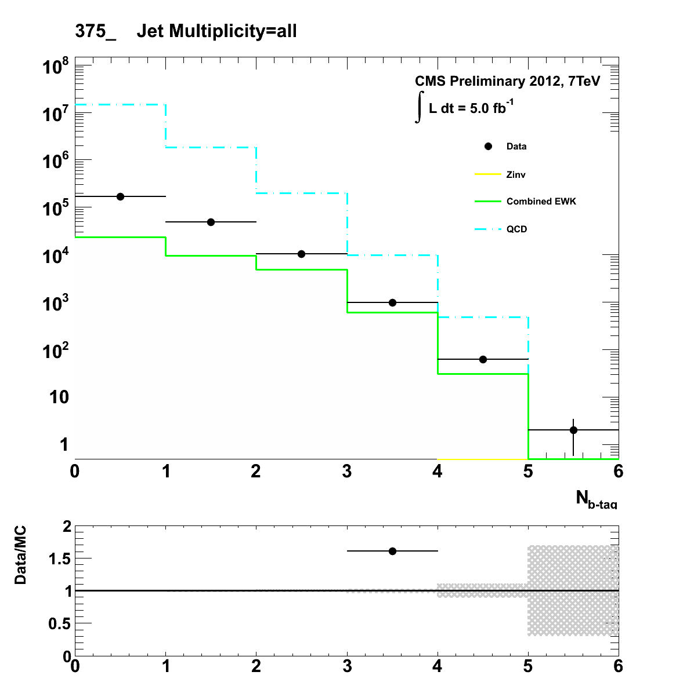
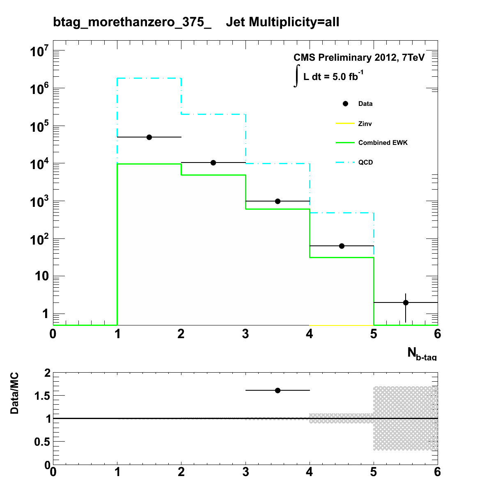

Author: Darren Burton <br> 
<script language="Javascript"> 
 document.write("Last Modified: " + document.lastModified + ""); 
 </script> <br> 
 <center>
 <p> 
 <font size="5"> Had Plots </font>
 </p>
<font size="3">Results for Btag_Pre_AlphaT_5__all_375_upwards </font><br> 
Hist Name: <a href="Simplified_AlphaT_all_375_upwards.html">AlphaT_all</a>       |     <a href="Simplified_AlphaT_Zoomed_all_375_upwards.html">AlphaT_Zoomed_all</a>       |     <a href="Simplified_HT_all_375_upwards.html">HT_all</a>       |     <a href="Simplified_HT_after_alphaT_55_all_375_upwards.html">HT_after_alphaT_55_all</a>       |     <br> 
<a href="Simplified_Btag_Pre_AlphaT_5__all_375_upwards.html">Btag_Pre_AlphaT_5__all</a>       |     <a href="Simplified_Btag_Post_AlphaT_5_55_all_375_upwards.html">Btag_Post_AlphaT_5_55_all</a>       |     <a href="Simplified_EffectiveMass_all_375_upwards.html">EffectiveMass_all</a>       |     <a href="Simplified_EffectiveMass_after_alphaT_55_all_375_upwards.html">EffectiveMass_after_alphaT_55_all</a>       |     <br> 
<a href="Simplified_JetMultiplicity_all_375_upwards.html">JetMultiplicity_all</a>       |     <a href="Simplified_JetMultiplicityAfterAlphaT_55_all_375_upwards.html">JetMultiplicityAfterAlphaT_55_all</a>       |     <a href="Simplified_MHT_all_375_upwards.html">MHT_all</a>       |     <a href="Simplified_BiasedDeltaPhi_after_alphaT_55_all_375_upwards.html">BiasedDeltaPhi_after_alphaT_55_all</a>       |     <br> 
<a href="Simplified_BiasedDeltaPhi_all_375_upwards.html">BiasedDeltaPhi_all</a>       |     <br> 
<br> 
HT Bins:  <a href="Simplified_Btag_Pre_AlphaT_5__all_275_325.html">275_325</a>     /    <a href="Simplified_Btag_Pre_AlphaT_5__all_325_375.html">325_375</a>     /    <a href="Simplified_Btag_Pre_AlphaT_5__all_375_475.html">375_475</a>     /    <a href="Simplified_Btag_Pre_AlphaT_5__all_375_upwards.html">375_upwards</a>     /    <br> 
<br> 
Change Evolution Type: <a href="Simplified_Btag_Pre_AlphaT_5__all_Zero.html">Btag Evolution</a><br> 
<br> 
 Toggle Full/Basic/Stacked Plots:<a href="Btag_Pre_AlphaT_5__all_375_upwards.html">  Full </a>     |     <a href="Stacked_Btag_Pre_AlphaT_5__all_375_upwards.html">   Stacked </a><br> 
<br> 
 Return to Home Page:<a href="../RA1_Website_Plots.html"> Go </a><br><br><a href=Simplified_Btag_Pre_AlphaT_5__all_375_upwards.png></a> 
<a href=Simplified_Btag_Pre_AlphaT_5__all_btag_morethanzero_375_upwards.png></a> 
